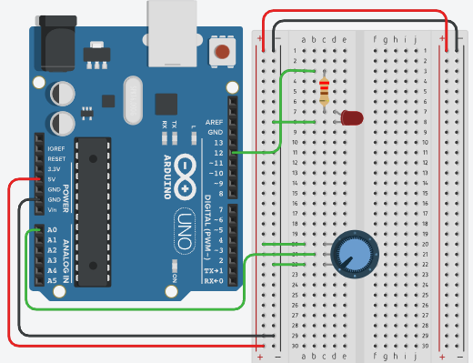
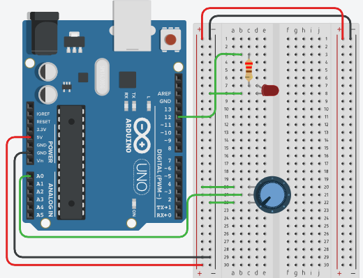
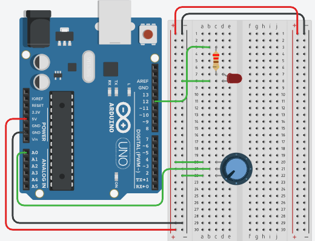

A plataforma Arduino é um ambiente de hardware e software que facilita o desenvolvimento de projetos de eletrônica e programação. É amplamente utilizada por entusiastas, estudantes e profissionais para criar dispositivos interativos, desde simples projetos até sistemas complexos.
O termo "microcontrolador ATMEL" refere-se à família de microcontroladores fabricados pela empresa Atmel (agora parte da Microchip Technology), que são usados nas placas Arduino. O mais comum é o ATmega328, encontrado na placa Arduino Uno.
